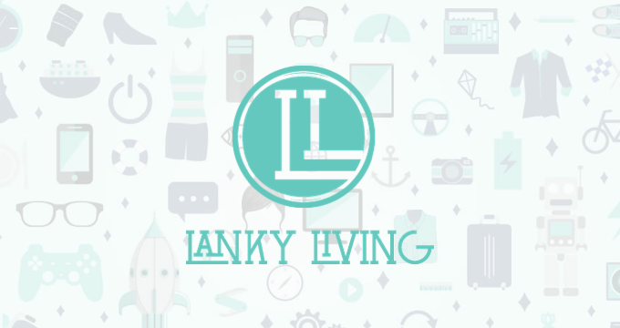

- 
-

Howdy!
As you may, or may not, have gathered my name is Justin Coleman. I'm a front-end developer based out of Austin, Texas.
My passion is in bridging the gap between designers and developers. My grasp of design methodologies, coupled with my experience writing front-end code lets me understand both sides and bring the two closer together creating a smoother workflow.
I thoroughly enjoy building mobile-first, responsive websites and applications. I have applied my skills in numerous fields including e-commerce, non-profit, big data and agency work.
Professonal Timeline
2016
-
Front-end Developer
Caringo
April 2012 - Current
In my role at Caringo I am primarily responsible for bridging the gap between the design and development sides of the UI team. I am also tasked with nearly all CSS styling across multiple projects.
-
Front-end Developer
BuildASign
Feb. 2012 - April 2012
In February of 2012 I was promoted at BuildASign and tasked with more responsibilities including leading the front-end build out of new features for existing sites, leading the front-end development of new properties and continued to work on most of the companies critical HTML emails, among other tasks.
-
Jr. Front-end Developer
BuildASign
Mar. 2011 - Feb. 2012
At BuildASign I worked as a junior developer handling almost all of the companies HTML email campaigns, fixing bugs on the companies various websites and assisting with building new sites.
-
Web Production Specialist
TASB
Aug. 2010 - Feb. 2011
In my role at the Texas Association of School Boards I was tasked with numerous jobs including, but not limited to: e-mail newsletter development, 3rd party e-commerce site integration, web application development, and best-practices research.
-
Front-end Developer
Freelance
May 2010 - Dec. 2010
After college I used my newfound skillset to work with a handful of local (Austin, TX) web design/development agencies in helping them build out sites for clients.
2010
Skills
Here is where I feel my skillset is, in ambigious chart form, for a few selected technologies that might interest you. As you can see, I feel strongest in (and favor) HTML, CSS, Sass and jQuery.
-
HTML
-
CSS
-
JavaScript
-
Sass
-
Jade
-
Gulp
-
Git
-
SVN
-
Bootstrap
Education
The University of Texas at Arlington
- Years: 2006 - 2010
- Major: Communication Technology
- GPA: 3.8(overall) | 4.0(major)
- Honors:
- Summa Cum Laude
- Phi Kappa Phi Honor Society